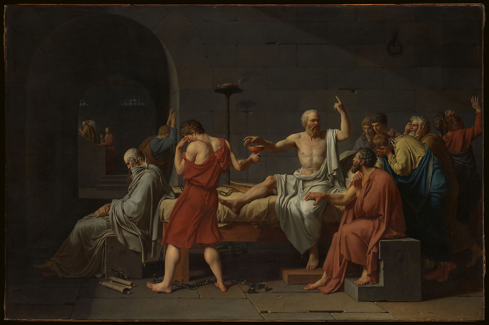

<head>
<meta charset="UTF-8" />
<meta name="keywords" content="drawing, painting" />
<meta name="description" content="drawings by Sunjy" />
<title>Sunjy</title>
<link rel="shortcut icon" type="image/x-icon" href="../../mImages/mCommon/favicon.ico" media="screen" />
<link rel="stylesheet" type="text/css" href="../../mCsses/mCommon/mCssA.css" />
<link rel="stylesheet" type="text/css" href="../../mCsses/mCommon/mCssB.css" />
<link rel="stylesheet" type="text/css" href="../../mCsses/mCommon/mCssC.css" />
<link rel="stylesheet" type="text/css" href="../../mCsses/mCommon/mCssD.css" />
<link rel="stylesheet" type="text/css" href="../../mCsses/mContent/mCssA.css" />
<link rel="stylesheet" type="text/css" href="../../mCsses/mContent/mCssB.css" />
<link rel="stylesheet" type="text/css" href="../../mCsses/mContent/mCssC.css" />
<link rel="stylesheet" type="text/css" href="../../mCsses/mContent/mCssD.css" />
</head>
<script type="text/javascript" src="../../mScripts/mContent/mContentAA.js" /></script>
<script type="text/javascript" src="../../mScripts/mContent/mContentAB.js" /></script>
<script type="text/javascript" src="../../mScripts/mContent/mContentAC.js" /></script>
<script type="text/javascript" src="../../mScripts/mContent/mContentAD.js" /></script>
<script type="text/javascript"></script> 
<script type="text/javascript">
document.write('<div class="mImgAbsolute"></div>');
/*
document.write('<p class="mFontSizeBColor" />From a white paper...</p>');
document.write('<table class="center"><tr><td>');
document.write('');
document.write('</td></tr></table>');
*/
</script>


<script type="text/javascript">
document.write('<p class="mFontSizeBColor" />The Death of Socrates</p>');
document.write('<p class="mFontSizeSColor" />By Jacques Louis David, 1787. In this landmark of Neoclassical painting from the years immediately preceding the French Revolution, David took up a classical story of resisting unjust authority in a sparse, frieze-like composition. The Greek philosopher Socrates (469–399 B.C.) was convicted of impiety by the Athenian courts; rather than renounce his beliefs, he died willingly, discoursing on the immortality of the soul before drinking poisonous hemlock. Through a network of carefully articulated gestures and expressions, David’s figures act out the last moments of Socrates’s life. He is about to grasp the cup of hemlock, offered by a disciple who cannot bear to witness the act. David consulted antiquarian scholars in his pursuit of an archeologically exacting image, including details of furniture and clothing; his inclusion of Plato at the foot of the bed, however, deliberately references not someone present at Socrates’s death but, rather, the author whose text, Phaedo, had preserved this ancient story into modern times.</p>');
document.write('<table class="center" /><tr><td>');
document.write('');
document.write('</td></tr></table>');
</script>


